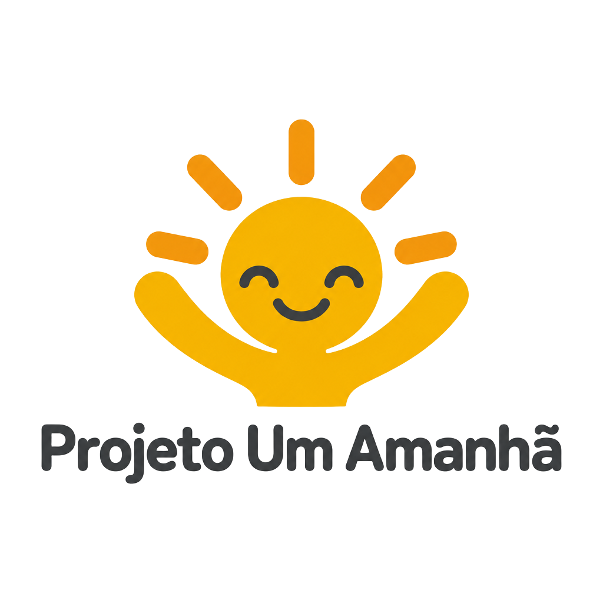
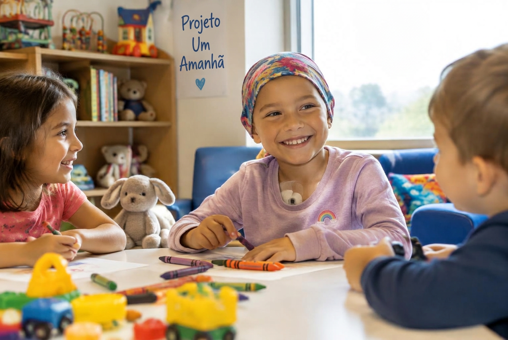
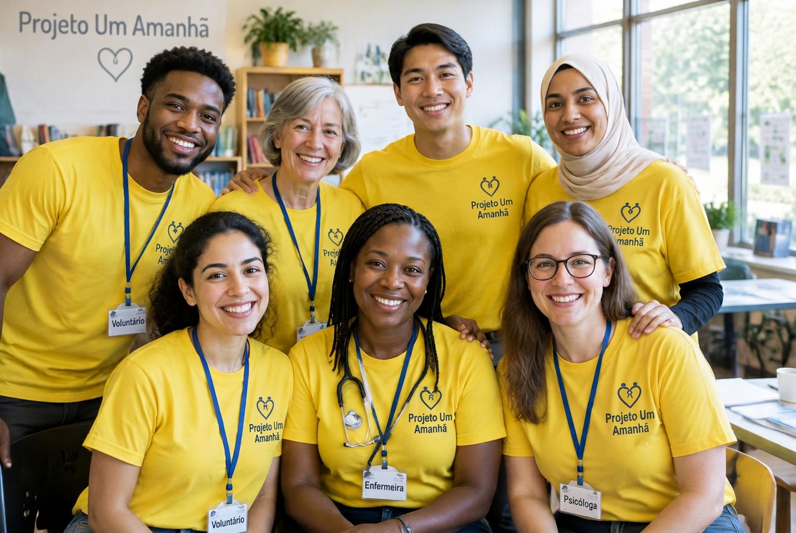
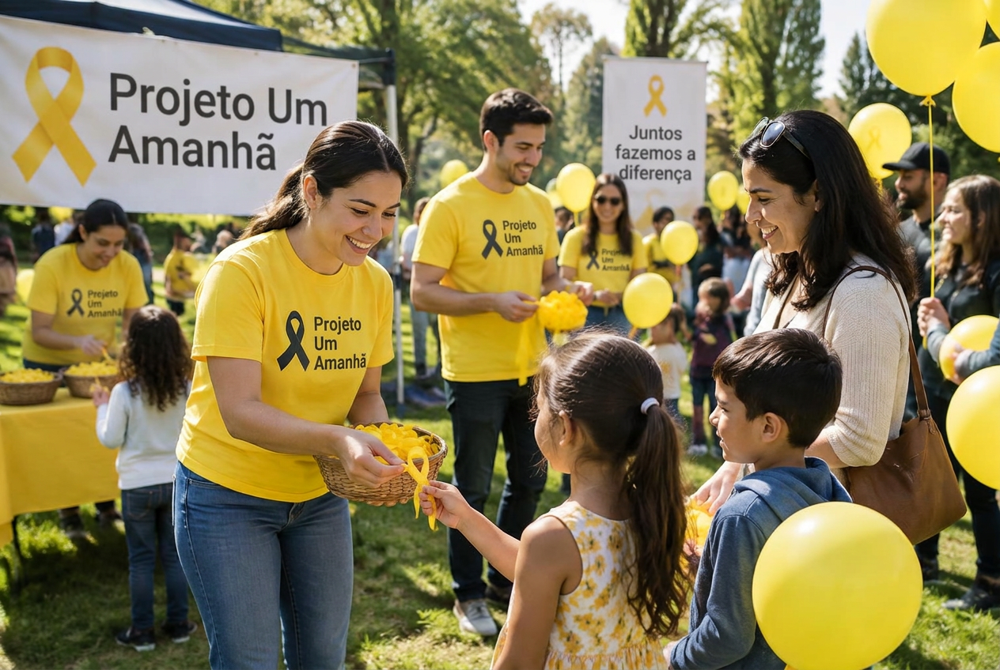

Nosso objetivo é conscientizar as pessoas sobre o câncer infantil e incentivar o apoio às crianças e suas famílias.
Conheça nosso projeto
O Projeto Um Amanhã é uma iniciativa acadêmica fictícia criada para representar uma ONG dedicada à conscientização sobre o câncer infantil.
Acreditamos que toda criança merece carinho, cuidado, esperança e a oportunidade de realizar seus sonhos.


Incentivar brincadeiras e momentos de alegria para crianças em tratamento.
Divulgar informações e mostrar a importância do apoio emocional aos familiares.
Conscientizar a sociedade sobre o câncer infantil e incentivar a solidariedade.
Os projetos são fictícios e fazem parte de um trabalho acadêmico.
Você pode compartilhar informações confiáveis, divulgar instituições especializadas e incentivar atitudes solidárias.
O Projeto Um Amanhã é fictício e não recebe doações reais.
Este espaço representa a área de contato da nossa ONG fictícia.
E-mail demonstrativo: contato@projetoumamanha.org